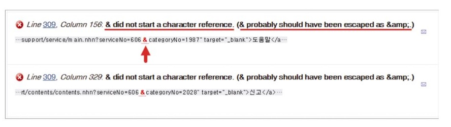
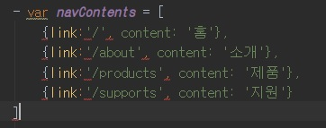

- Jade 변수와 3항 연산 알아보기
-
Jade 문서에서는 자바스크립트 변수(var) 표현과 유사한 표현(-var)을 이용하여 변수를 정의하고 활용할 수 있습니다.
다음처럼 Jade 변수 isIndexPage를 선언한 후 값을 거짓(false)으로 입력합니다.
그리고 body 요소의 class 속성 구문을 작성한 후 3항 연산 코드(조건? 참 : 거짓)를 완성합니다.
이 3항 연산 코드를 해석하면 다음과 같습니다.
class 속성 값을 대입하기 전에 변수 isIndexPage 값을 확인하여 값이 참(true)이면 main을, 거짓(false)이면 sub를 입력하라는 의미입니다.
저장한 후 컴파일된 test.html 문서의 body 요소 class 속성을 보면, sub 값이 적용되어 있습니다.
그리고 변수 isIndexPage 값을 참(true)으로 변경한 후 저장하면 class 속성 값이 main으로 변경됩니다.
깨알 tip
3항 연산자(? :)와 피연산자로 구성된 구문을 의미합니다.
조건이 참(true)인지, 거짓(false)인지를 가늠하여 조건에 따라 코드를 처리합니다.
if 조건문 구문보다 간결하게 사용할 수 있어서 자주 사용됩니다.
- 현재 페이지의 내비게이션 메뉴 활성화하기
-
내비게이션은 페이지를 구분하여 해당 페이지를 가리키는 메뉴를 활성화합니다.
Jade 변수와 3항 연산 코드를 활용하면 메뉴 활성화를 손쉽게 구현할 수 있습니다.
아래 코드를 보면, 현재 페이지 이름을 담은 변수 curUrl 조건에 따라 내비게이션 메뉴에 class 속성 값을 active로 설정했습니다.
- 특수문자 이스케이프 처리하기
-
HTML 문서에서 특수문자(<,>,&,...)를 사용하려면 이스케이프(Escape) 처리가 필요합니다.
예를 들어, 튜토리얼(Tutorial) 사이트에서 HTML 코드를 화면에 출력할 때 HTML 코드 그대로 작성하면 웹브라우저는 해당 코드를 제대로 출력하지 못합니다.
특수문자를 코드가 아닌 문자로 인식해야 해석하지 않고 화면에 코드를 출력합니다.
하지만 특수문자를 문자로 해석하게 하는 이스케이프 처리는 상당히 번거롭습니다.
특수문자로 인식하게 하려면 엔티티(Entity) 코드를 사용해야 하기 때문입니다.
이런 번거로움도 Jade를 이용하면 손쉽게 해결할 수 있습니다.
다음 사진을 보시면 작은 따옴표(')로 묶인 코드는 화면에 출력할 HTML 코드입니다.
인라인 중첩 구문(:)을 사용하여 pre 요소 내부에 code 요소를 생성할 때 작은 따옴표(')로 묶인 HTML 코드를 내용으로 대입(=)합니다.
이때 기호 =을 붙이면 특수문자를 문자로 인식하도록 이스케이프 처리됩니다.
반면, 기호 !=을 붙이면 작은따옴표(')로 묶인 HTML 코드가 이스케이프 처리되지 않아 그대로 code 요소에 포함됩니다.
이스케이프 처리가 반영된 결과와 그렇지 않은 결과를 웹브라우저에서 확인하면 다음 사진과 같습니다.
특수문자가 이스케이프 처리된 결과는 문자로 인식되어 화면에 그대로 출력되는 반면,
이스케이프 처리되지 않은 결과는 HTML 요소로 그대로 해석됩니다.
특수문자를 이스케이프 처리하는 다른 예로 실무에서 쉽게 발생하는 HTML 표준 문법 오류를 들 수 있습니다.
a 요소 href 속성 값(웹 링크 경로)에 특수문자 &가 포함되어 있을 때 & 문자를 이스케이프 처리하지 않으면 다음 처럼 표준 문법을 준수하지 않은 결과를 초래합니다.
문제 해결책으로 & 특수문자를 & 엔티티 코드로 이스케이프 처리해야 한다고 알려 줍니다.

Jade는 HTML과 달리 a 요소 href 속성 값으로 & 특수문자를 포함한 웹 링크 주소를 대입(=)하면, 자동으로 특수문자를 이스케이프 처리합니다.
따라서 표준 문법을 준수하지 않은 문제에서 자유로울 수 있습니다.
이스케이프 처리를 원하지 않을 때는 != 기호를 사용합니다.
- 배열로 class 속성 제어하기
-
Jade는 class 속성을 배열(Array)로 설정할 수 있는데, 속성 값을 분리하여 외부에서 관리할 수 있습니다.
또 다음처럼 동일한 class 속성을 중복 설정하면 각 값을 병합합니다.
다시 말해, body 요소에는 두 개의 class 속성이 설정되어 있지만, 각 class 속성 값은 합쳐진다는 의미입니다.
다른 속성에는 이 방법이 적용되지 않습니다.
- &attributes()를 활용한 속성 설정하기
-
Jade는 요소에 &attributes()를 붙여 자바스크립트 객체 형식으로 속성을 추가할 수 있습니다.
다음을 참고하여 article 요소에 &attributes()를 붙인 후 자바스크립트 객체 형식으로 속성을 추가합니다.
그러면 그에맞게 HTML 파일로 컴파일됩니다.
- 조건문 사용하기
-
Jade 조건문(Conditionals) 또한 자바스크립트 조건문과 사용 방법이 유사합니다.
아래 그림을 참고하여 코드를 입력합니다.
jQuery 사용 유무 조건을 변수 usingJquery에 설정한 후 if~else 조건문을 작성합니다.
조건이 참(true)이면 jQuery 코드를 호출하는 script 구문을 추가하고 현재 문서에 jQuery가 사용됨을 문서에 출력합니다.
조건이 거짓(false)이면 현재 문서에 jQuery가 사용되지 않음을 문서에 출력합니다.
깨알 tip
또 다른 Jade 조건문인 Case 구문은 http://jade-lang.com/reference/case를 참고합니다.
- 반복문 사용하기
-
Jade 반복문(Iteration)은 each ~ in 구문을 사용합니다.
간단한 내비게이션 마크업으로 반복문 사용 방법을 알아보겠습니다.
아래를 보면, each~in 구문에서 in 뒤에 위치한 배열의 아이템은 총 네 개의 문자열 데이터로 구성되어 있습니다.
그리고 구문 줄의 변수 item은 반복해서 순환할 때마다 배열의 각 아이템을 가리킵니다.
즉, 구문이 첫 번째로 순환할 때 변수 item은 '홈'이며, 두 번째로 순환할 때 변수 item은 '소개'입니다.
아이템 개수만큼 반복해서 처리되는 li: a(href="#")=item 구문은 반복할 때마다 처리되는 item 값을 대입하여 구문을 반복 생성합니다.
다음을 보면 쉽게 이해할 수 있습니다.
반복문을 이해하려고 간단히 실습했지만, 이것만으로는 실무에서 활용할 수 없습니다.
실무에서 제대로 활용하려면 내비게이션 각 아이템의 내용 말고도, 링크되는 경로도 반복해서 각 값을 처리해야 합니다.
다소 복잡해 보이지만, 다음을 참고하여 실무에서 활용 가능한 내비게이션 코드를 입력하면 좀 더 쉽게 이해할 수 있습니다.
navContents 변수선언할 때, [] 배열 안에 내부객체 {} 선언할 때, 1열로 입력해야됩니다. 안그러면 오류가 발생합니다.
위의 사진을 보면, navContents 변수에 대입되는 배열 값은 굉장히 복잡합니다.
코드가 한 줄로 처리되어 읽기 어렵습니다.
이 값을 읽기 쉽게 변경하면 아래 처럼 입력할 수 있습니다.

하지만 위에서 말했듯이 jade에선 변수 값을 여러 줄로 입력하면 오류가 발생하기에 한 줄로 작성합니다.
코드는 배열의 각 아이템을 객체로 포함하며, 각 객체는 두 개의 속성(link, content)을 가집니다.
이제 each~in 구문을 알아보겠습니다.
위의 사진에서 in 뒤에 위치한 변수 navContents는 배열 데이터를 가리키며,
each 뒤에 위치한 변수 item은 배열에 포함된 각 아이템 객체를 가리킵니다.
즉, 첫 번째 반복 과정에서 item은 {link: '/', content:'홈'}을,
두 번째 반복 과정에서는 {link: 'about', content:'소개'}를 가리킵니다.
마지막으로 li: a(href=item.link)=item.content 구문을 알아봅니다.
item은 배열에 포함되어있는 각 객체를 가리킨다고 말했죠?
각 배열 아이템은 객체이며, 속성(link, content)을 가진다고 했습니다.
속성 중 link는 a 요소의 href 속성 값이며, content는 a 요소의 내용입니다.
객체의 속성에 접근하는 방법은 '객체.속성'으로 item.link는 item이 참조하는 객체의 link 속성 값을 가리킵니다.
그러므로 item.content는 item 객체의 content 속성 값입니다.
이해되었나요?
깨알 tip
또 다른 Jade 반복문인 while 구문은 http://jade-lang.com/reference/iteration을 참고합니다.